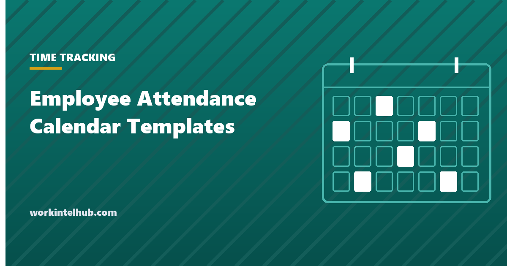

Employee Attendance Calendar Templates

An attendance calendar shows a year of one person's attendance on one page: twelve rows of days with a code in each cell. It is the format HR departments used before software and still the quickest way to see a pattern, such as the Monday absences, the leave that clusters around holidays, or the quarter where lateness started. It is also the format employees understand at a glance when attendance comes up in a review.
The templates are a year-at-a-glance calendar for one employee, a team calendar for one month, and a leave calendar that shows who is off when so that approvals consider coverage. Excel counts the codes; the Word and PDF versions print for the personnel file.
Download the templates
Free files: Word, Excel and PDF
Three files, free, no email required. Word to edit, Excel to track, PDF to print or share.
Templates open in Microsoft Word, Excel, Google Docs and Sheets, LibreOffice and any PDF reader. Free to use and adapt for your organisation.
What is in the templates
- Year-at-a-glance calendar. One employee, twelve months by thirty-one days, with each code counted per month.
- Team monthly calendar. Everyone on one page for the month, counted per employee.
- Leave calendar. Who is off when, with working days calculated, so approvals consider coverage.
- Codes. The same nine codes as the attendance sheet, with the column that says what may count.
Reading the calendar
The yearly view exists to show patterns a monthly sheet hides: absences that fall on Mondays or Fridays, the week before and after holidays, a run of lateness that started in a particular month. Patterns are a reason for a conversation, not a conclusion; the absenteeism guide covers how to have that conversation once protected leave is excluded. Protected leave (FMLA, ADA, military, jury duty and state paid sick leave) is coded F or S and never counted, and the reason for it stays out of the calendar; the calendar is in the personnel file, where medical detail does not belong.
Planning leave with the calendar
The leave calendar is the manager's tool. Before approving a request, it shows who else is off and whether the team can cover; the time off request form feeds it. Working days are calculated with the NETWORKDAYS function, which excludes weekends; add a holidays range for your company's days, and consult the federal holidays and working days pages for the calendar year. Accrued balances belong in the PTO accrual calculator rather than on the calendar.
Keeping the calendar correct
- Fill it from the time record or the sign-in sheet, not from memory, and at least weekly.
- Give the employee a copy at review time; disputes about dates are easiest to settle when both sides have the same calendar.
- Correct entries by striking through and initialling on paper, or with a note in Excel; do not overwrite silently.
- Keep calendars for the employee's tenure plus the limitation period, commonly four years.
Key takeaways
- A yearly attendance calendar shows the patterns monthly sheets hide; patterns start conversations, not conclusions.
- Protected leave is coded separately, never counted, and the reason stays out of the calendar.
- Use the leave calendar for coverage before approving requests; working days calculate automatically.
- Fill from the time record weekly, share with the employee at review time, correct with a note.
Frequently asked questions
What is an employee attendance calendar?
A one-page view of an employee's attendance for a year, with a code for each day, used to see patterns, support reviews and plan leave. The templates include a yearly calendar per employee, a team monthly calendar and a leave calendar.
How do I mark sick leave and FMLA on an attendance calendar?
With a code that is never counted against the employee (S for sick where state law protects it, F for FMLA, ADA, military and jury leave) and without the reason, which is medical information that belongs in a separate confidential file.
Can I use the attendance calendar for discipline?
Only in combination with a written attendance policy that says which occurrences count and that excludes protected leave, and with the occurrence record kept separately. The calendar is evidence of pattern, not of points.
How does the leave calendar calculate days?
With NETWORKDAYS, which counts weekdays between the from and to dates. Add a range of company holidays as the third argument to exclude them.
How long should attendance calendars be kept?
For the employee's tenure plus the period in which a claim could be brought, commonly four years, and longer if the calendar supported a disciplinary decision or a leave determination.